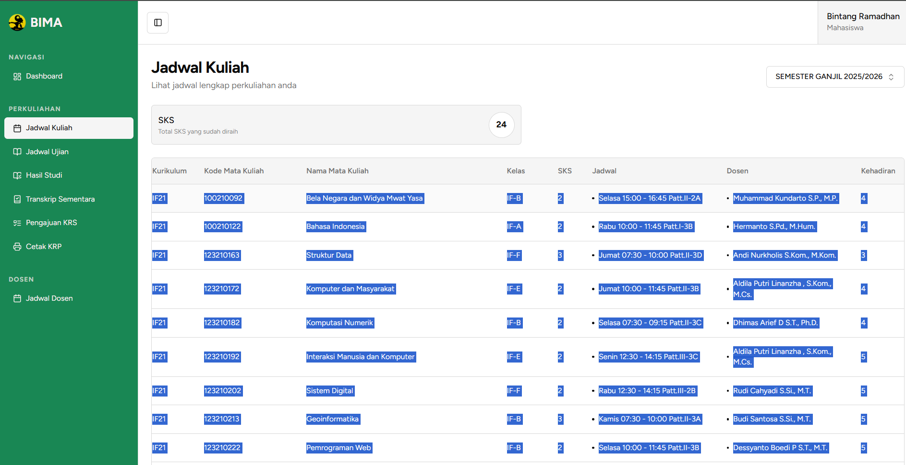

Langkah pertama adalah memberikan izin aplikasi untuk mengakses Google Calendar Anda. Klik tombol "Hubungkan dengan Google Calendar" di halaman utama. Anda akan diarahkan ke halaman login Google untuk otorisasi. Tenang, kami hanya meminta izin untuk membuat acara di kalender Anda, tidak lebih.
Setelah berhasil, status di halaman utama akan berubah menjadi "✅ Terhubung".
Buka portal akademik BIMA Anda dan buka halaman jadwal kuliah. Salin seluruh tabel jadwal dengan cara menyeleksi (highlight) semua teks dari header kolom "Kurikulum" hingga baris mata kuliah terakhir, seperti pada gambar di bawah ini:
Setelah semua terseleksi, salin (Ctrl+C), lalu tempelkan (Ctrl+V) teks tersebut ke dalam kotak besar di halaman utama. Aplikasi akan secara otomatis membaca format teks per mata kuliah seperti di bawah ini:
Format Umum: [Kurikulum] [Kode] [Nama Mata Kuliah] [Kelas] [SKS] [Jadwal Hari Jam Ruang] [Nama Dosen] [Jumlah Kehadiran] Contoh Nyata: IF21 23210163 Struktur Data F-F 3 Jumat 07:30 - 10:00 Patt.II-3D Ansi Nurkholis S.Kom., M.Kom. 3
Jika format yang Anda tempel sudah sesuai, klik tombol "Proses Jadwal".
Setelah jadwal berhasil diproses, Anda akan melihat daftar mata kuliah yang ditemukan. Sekarang, atur dua hal:
- Tanggal Mulai Semester: Pilih tanggal perkuliahan minggu pertama dimulai.
- Ulangi Selama (Minggu): Masukkan total minggu perkuliahan dalam satu semester (biasanya sekitar 14-16 minggu).
Jika semua sudah benar, klik tombol "Sinkronkan ke Google Calendar". Tunggu beberapa saat, dan semua jadwal mata kuliah Anda akan otomatis masuk ke kalender!